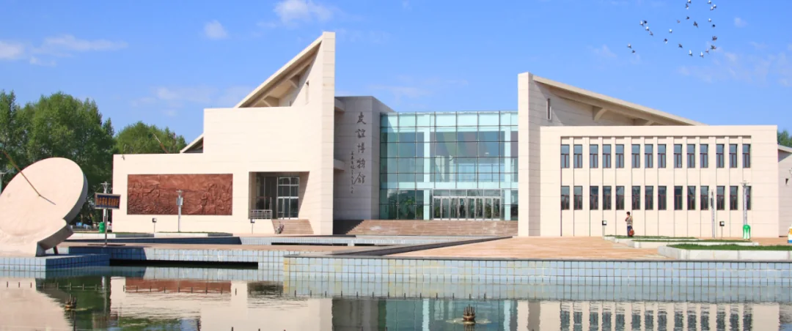
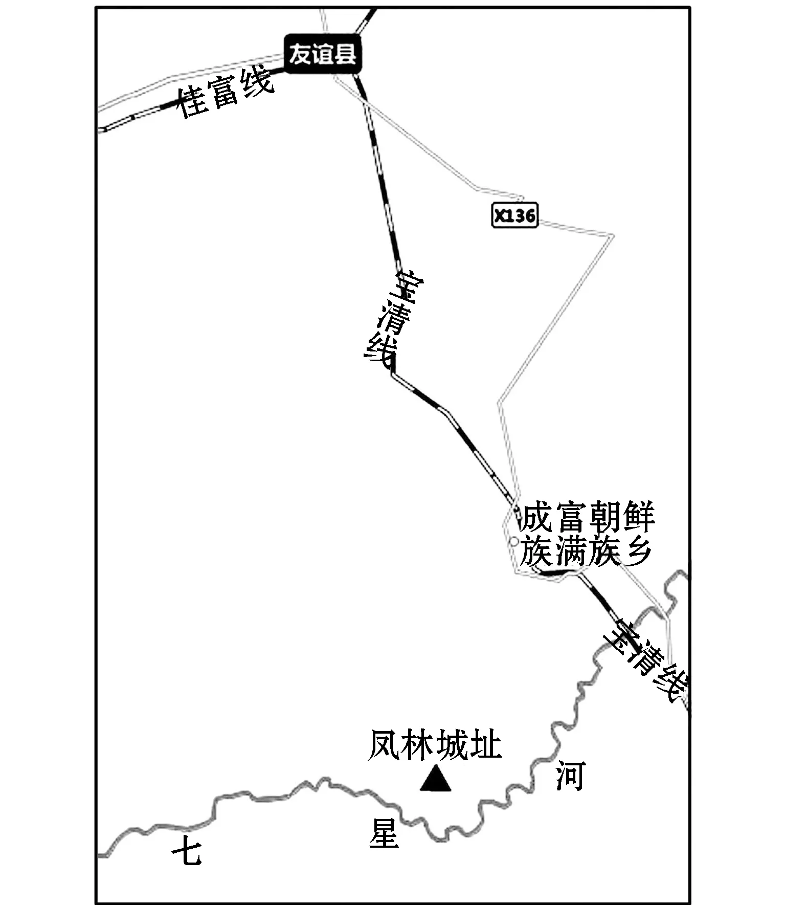
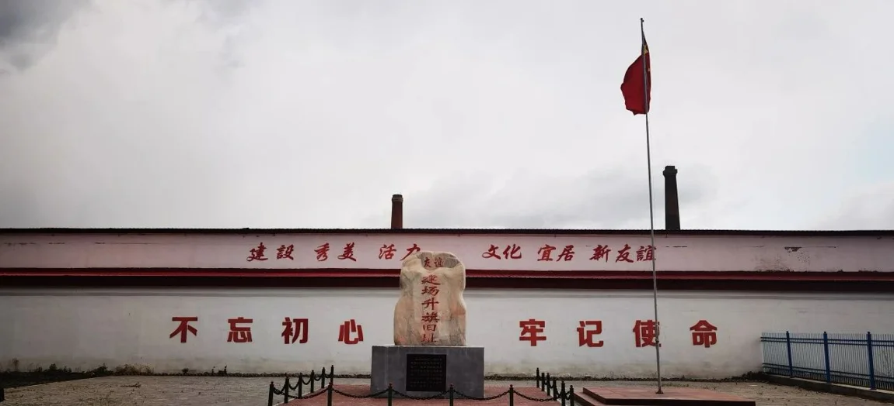
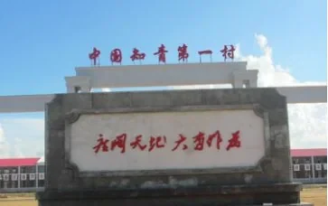
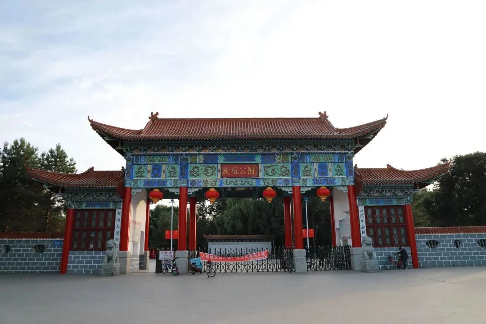

友谊景点指南
这里有地方博物馆、农机展园、古城遗址和仍在耕作的万亩良田。每处地点都有独立介绍和到访信息。

农垦与机械化 · 友谊镇西
北大荒农机博览园
在友谊镇西侧，从钢拱长廊走到月亮湾畔的露天展区，可以近看轮式拖拉机、联合收割机和其他农机。园区也讲述梁军和友谊农场五分场二队的故事。

县城里的地方史
友谊博物馆
2009年开馆的友谊博物馆位于友谊镇西直路。八个主题展厅从黑土平原讲到挹娄文化、中苏建场、北大荒垦殖与今天的农业。

挹娄文化展示
挹娄文化风情园
挹娄文化风情园在友谊镇西，与北大荒农机博览园相邻。园区于2010年建成，以凤林城址为背景，用建筑、雕塑和生活场景呈现约一千八百年前的七星河流域。

汉魏遗址 · 成富乡
凤林城址
七星河左岸的汉魏古城。九个城区、半地穴房址和出土农具，留下了这里曾有人居住、耕种的线索。

建场记忆 · 1954年
友谊农场建场升旗旧址
1954年12月21日，友谊农场在早期场部举行建场升旗仪式。

中苏援建 · 友谊公园
中苏友谊纪念碑
纪念碑位于友谊公园内，碑身竖刻“中苏友谊万岁”。

友谊镇 · 场部旧迹
俄式八角楼与毛主席像
俄式八角楼与毛主席像都在友谊镇的农场老场部一带。红砖建筑和广场见证了总场部的建设与变迁。

知青记忆 · 农垦文化
中国知青第一村
中国知青第一村以友谊农场的知青生活为主题。入口照壁上刻着“广阔天地 大有作为”。

现代农业 · 生产现场
万亩良田
从友谊农场的盛夏稻田和稻田画，看五分场二队怎样把连片种植、机械化和数字农业带到田间。

县城散步 · 友谊镇
友谊公园
友谊公园位于友谊镇西一路与北五道街交会处，正门与友谊博物馆隔路相望。湖边的长廊、石拱桥和两座纪念碑，是公园里辨识度最高的景致。